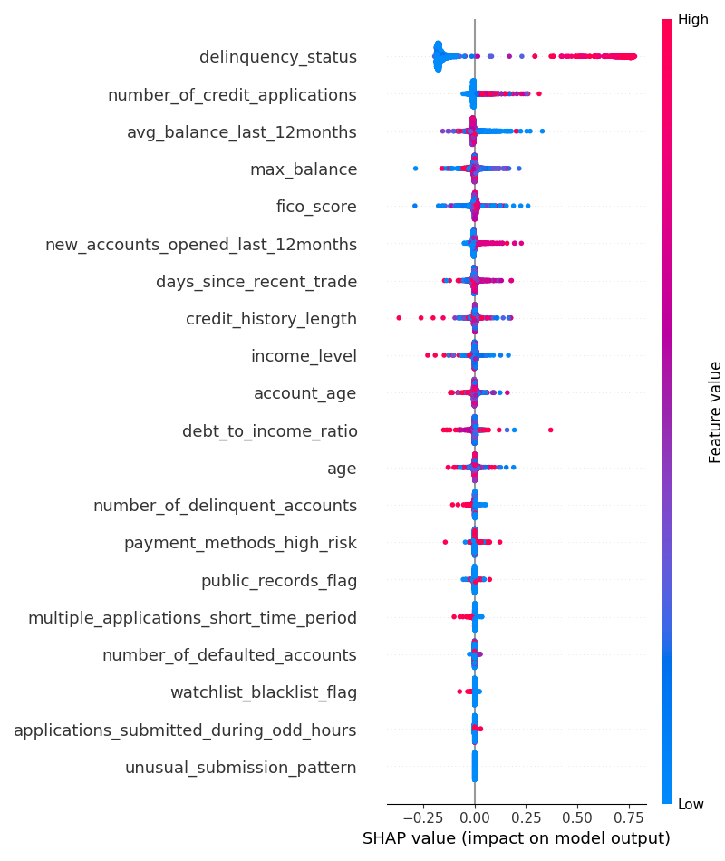

Table of Contents
Getting Started
Core Features
Introduction
The project implements a sophisticated fraud detection system using an Explainable Boosting Machine (EBM) model. This advanced approach not only predicts potential fraud but also provides clear explanations for its decisions, making it an invaluable tool for financial security and risk management.
Fraud Detection
Advanced algorithms to identify suspicious patterns and anomalies
Risk Analysis
Comprehensive risk scoring and evaluation system
Explainable AI
Transparent decision-making with SHAP values
Dependencies
Required Libraries
- pandas
- numpy
- matplotlib
- scikit-learn
- shap
- interpret
Installation
pip install pandas numpy matplotlib shap scikit-learn interpret imbalanced-learnData Processing
Data Loading
Dataset Source:
cleaned_fraud_detection_dataset.csv
Preprocessing Steps
Missing Values
- Object columns filled with most frequent value
- Numerical columns filled with median value
Feature Engineering
- Date columns transformed into numerical features
- Credit history length calculation
- Days since recent trade calculation
Data Scaling
- StandardScaler applied to numerical features
- Zero mean and unit variance transformation
Model Details
Training Process
Data Split
Random seed set to 42 for reproducibility
Class Imbalance
SMOTE (Synthetic Minority Over-sampling Technique) applied to balance the dataset
Model Configuration
EBM Classifier
- Explainable Boosting Machine Classifier implementation
- Interpretable model structure
- Built-in feature importance analysis
Model Persistence
-
fraud_model.pkl -
scaler.pkl
Predictions and Evaluation
Evaluation Metrics
Additional Analysis
Classification Report
Detailed metrics breakdown by class
Confusion Matrix
Visual representation of model performance
Performance Insights
In-depth analysis of model behavior
Risk Scores Calculation
Score Generation
The model converts fraud probability predictions to a scale of 0-1000 using the calculate_risk_scores function, providing actionable metrics for decision-making.
Feature Importance with SHAP
SHAP Analysis
SHAP (SHapley Additive exPlanations) values provide insights into feature contributions for individual predictions.
- Feature contribution analysis
- Individual prediction explanations
- Global model interpretation
Visualization
-
Summary Plot
Overall feature importance visualization
 -
Individual SHAP Plots
Per-sample feature contribution analysis
-
PNG Exports
High-quality visualization exports
Output Files
Generated Files
-
risk_scores_comparison_prediction_actual.csv
Risk scores and prediction results
-
X_test_features.csv
Scaled test set features
-
full_results_with_features.csv
Complete analysis results
Visualizations & Models
-
summary_plot.png
SHAP summary visualization
-
shap_plots directory
Individual SHAP force plots
-
fraud_model.pkl
Trained EBM model
-
scaler.pkl
Trained StandardScaler
Usage Guide
Getting Started
-
1
Install Dependencies
Use pip to install required libraries
-
2
Prepare Data
Place data file in R/R/ directory
-
3
Run Notebook
Execute notebook cells sequentially
-
4
Check Results
Review output in Model_Outputs directory
Quick Tips
-
Ensure all dependencies are installed before running
-
Monitor memory usage during SMOTE processing
-
Back up original data before preprocessing